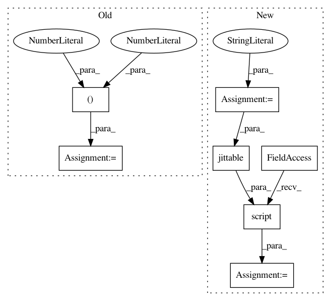

7b4892781e2198ad99a8655da03133505619040a,test/nn/conv/test_arma_conv.py,,test_arma_conv,#,5
Before Change
def test_arma_conv():
in_channels, out_channels = (16, 32)
num_stacks, num_layers = 8, 4
edge_index = torch.tensor([[0, 0, 0, 1, 2, 3], [1, 2, 3, 0, 0, 0]])
num_nodes = edge_index.max().item() + 1
edge_weight = torch.rand(edge_index.size(1))
After Change
jit = torch.jit.script(conv.jittable(t))
assert jit(x, edge_index).tolist() == out.tolist()
t = "(Tensor, SparseTensor, OptTensor) -> Tensor"
jit = torch.jit.script(conv.jittable(t))
assert torch.allclose(conv(x, adj.t()), out, atol=1e-6)
In pattern: SUPERPATTERN
Frequency: 5
Non-data size: 7
Instances
Project Name: rusty1s/pytorch_geometric
Commit Name: 7b4892781e2198ad99a8655da03133505619040a
Time: 2020-06-28
Author: matthias.fey@tu-dortmund.de
File Name: test/nn/conv/test_arma_conv.py
Class Name:
Method Name: test_arma_conv
Project Name: rusty1s/pytorch_geometric
Commit Name: 18f7a20f9098da9bd848e31b501b6b1c571accc1
Time: 2020-06-27
Author: matthias.fey@tu-dortmund.de
File Name: test/nn/conv/test_appnp.py
Class Name:
Method Name: test_appnp
Project Name: rusty1s/pytorch_geometric
Commit Name: d2ee769ba220e135312df733a256ad37f354227f
Time: 2020-06-24
Author: matthias.fey@tu-dortmund.de
File Name: test/nn/conv/test_gravnet_conv.py
Class Name:
Method Name: test_gravnet_conv
Project Name: rusty1s/pytorch_geometric
Commit Name: 0ac8fd7f84e53235eeb17287b25d1c191f1e4614
Time: 2020-06-14
Author: matthias.fey@tu-dortmund.de
File Name: test/nn/conv/test_edge_conv.py
Class Name:
Method Name: test_edge_conv_conv
Project Name: rusty1s/pytorch_geometric
Commit Name: 529eca01188546cef7ac4b245bebd2171a62a807
Time: 2020-06-16
Author: matthias.fey@tu-dortmund.de
File Name: test/nn/conv/test_gated_graph_conv.py
Class Name:
Method Name: test_gated_graph_conv